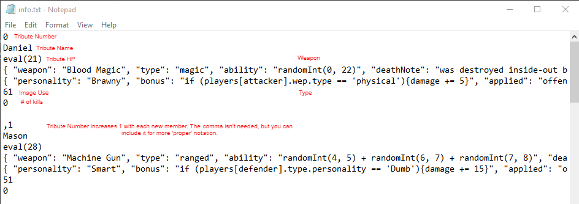

Battle Royal
START GAME
Generate battle from text file!
Press 1 to view log
Press 2 to view full log
Save Game during a session to save a textfile of your current match. You can edit it if you want. Place the text file in the text foulder, otherwise choose file will not work. See image bellow for help.

Game Log!
Full Game Log!
Save Game
Download